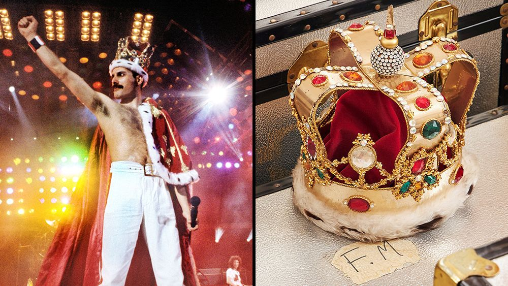
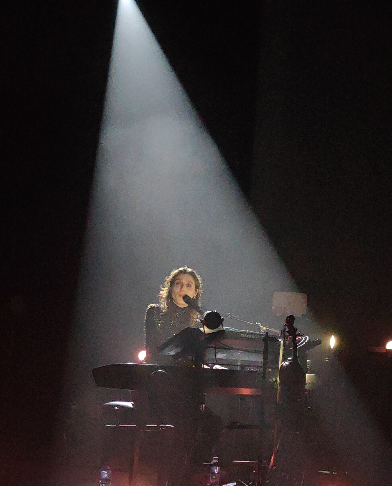

which I find always fascinating at finding clothes and other items that I can find only there.
Usually I am not that spontaneous person
but it has been a while since I was in London and I miss that place.
The main two reasons I went to London were :
I am a big Queen fan and it was an oppertunity which I couldn´t resist,
to see all of Freddie Mercury personal items
before it will go for public auction.
The highlight of this exhibition was to see his personal Piano where he wrote the hit song Bohemian Rhapsody,
original songs sheets that he wrote back in the days, and to have the chance to look on his personal life since it was hide from public through the years.
Here are some of the famouse items that were sold in the exhibition:
Freddie Mercury´s crown and cloack

My second reason was to be in a concert of the singer Birdy, which I discovered her recently and since I love live concerts
I decided to combine the concert with my staying in London.
One of my favourite song by her is "Wings"

My trip also included a visit in Camden market
which I find always fascinating at finding clothes and other items that I can find only there.
One of the most unique places I had the chance to visit was the special restaurant Karen´s diner
which is known for there concept of terrible service bad good food.
I am looking forward for the next time I will be in London again.